Study J03 as a complete chapter: models and assumptions → derivations → solved controls → refinements → one comprehensive calculation. The cavity/source history is supplied here; laser absorption and PFC thermodynamics enter after J04. Ask about any step that is unclear.
将 J03 作为完整章节学习：模型与假设 → 推导 → 已解对照 → 改进 → 一道综合计算。本阶段给定腔体／源历程；激光吸收与 PFC 热力学在 J04 之后引入。任何不清楚的步骤均可继续提问。
Goal: propagate a formed jet to a receiver, derive capillary growth rather than assert breakup, and predict which disturbances have time to matter.
目标：将已形成射流传播至接收体，推导毛细扰动增长而不是直接断言破碎，并预测哪些扰动有足够时间发挥作用。
1 · Carry the formed jet forward as a finite moving body
1 · 将已形成射流作为有限运动体继续推进
J02 supplies a jet shape and velocity field at the end of formation. During flight, the relevant questions change: how fast does liquid reach the receiver, how much liquid arrives, and does the free surface neck or fragment first? For a long axisymmetric thread, a reduced one-dimensional model can retain the axial radius and velocity fields. Its inputs are the actual initial profile, any continuing inlet supply, the exterior pressure, and conditions at the ends. A tip speed alone supplies none of the mass or disturbance information.
J02 在形成阶段结束时提供射流形状与速度场。飞行阶段的问题变为：液体多快到达接收体、到达多少、自由表面是否先缩颈或碎裂。长轴对称液丝可用降阶一维模型保留轴向半径与速度场。输入包括实际初始轮廓、仍持续的入口供给、外部压力及端部条件。仅有尖端速度不能提供质量或扰动信息。
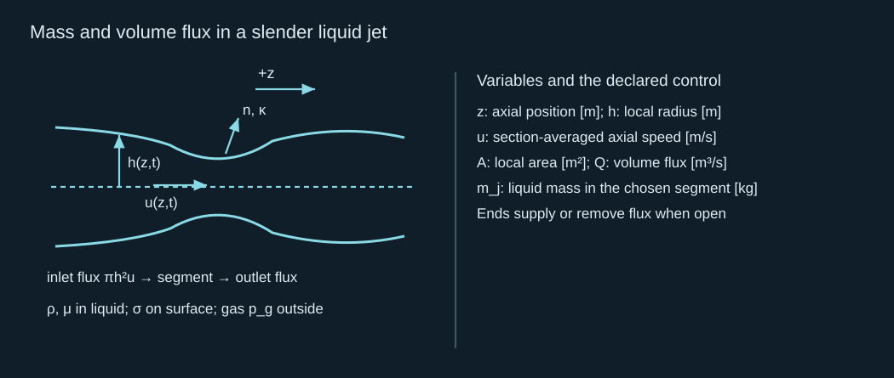
Mass and volume flux in a slender liquid jet
细长液体射流中的质量与体积流量
Derive the last equation by balancing liquid volume in a short axial segment. Inflow minus outflow changes its cross-sectional area. This automatically couples extension to thinning: if the axial speed increases downstream, the thread must become thinner unless extra liquid enters laterally. Track a finite segment with its fluxes when the formation source keeps feeding it. For an isolated uniform cylinder the mass simplifies to density times area times length.
最后一个方程由短轴向段的液体体积平衡得到：流入减流出改变截面面积。因此，伸长自动与变细耦合；若轴向速度向下游增加，又没有额外侧向液体进入，液丝就必须变细。形成源仍在供液时，应同时追踪有限段与其通量。孤立均匀圆柱的质量简化为密度乘面积乘长度。
2 · Close axial motion with curvature and extensional viscosity
2 · 用曲率及拉伸黏性闭合轴向运动
Use the normal pointing out of the liquid thread. The curvature of a surface of revolution contains an azimuthal contribution and an axial contribution. A bulge increases radius and can decrease the azimuthal capillary pressure; axial bending contributes the opposing short-wavelength effect. The axial pressure gradient then drives liquid from narrow high-pressure regions into wider low-pressure regions. This competition is what creates the long-wave capillary instability.
使用从液丝指向外部的法向。旋转曲面的曲率包含周向与轴向贡献。鼓起使半径增加，可能降低周向毛细压力；轴向弯曲则提供阻碍短波的作用。轴向压力梯度使液体从窄的高压区域流向宽的低压区域。这种竞争产生长波毛细失稳。
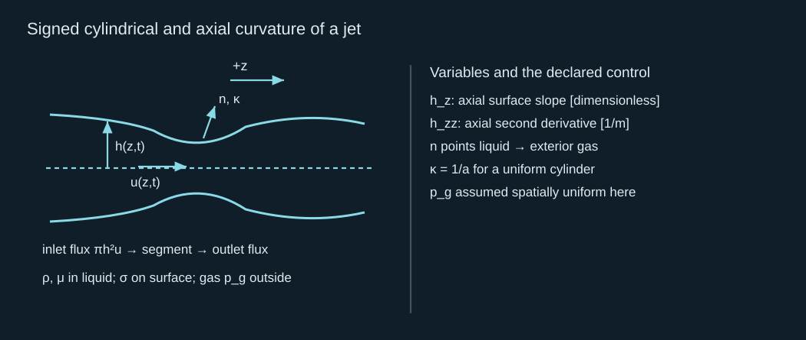
Signed cylindrical and axial curvature of a jet
射流的带符号圆柱与轴向曲率
The leading slender-jet momentum equation contains inertia, capillary pressure gradient and axial extensional viscosity. The factor of three is the Newtonian extensional response after the free-surface stress condition is used. It is not the friction coefficient for pipe flow. The geometry is a free thread rather than a tube. This reduced dynamics assumes slender axial variation and a suitable nearly uniform section velocity; retaining exact geometric curvature does not turn it into an exact three-dimensional flow model.
首阶细长射流动量方程包含惯性、毛细压力梯度和轴向拉伸黏性。系数三来自应用自由表面应力条件后的 Newton 液体拉伸响应，不是管流摩擦系数，因为几何是自由液丝而非管道。该降阶动力学假定轴向变化细长且截面速度近似合适地均匀；保留精确几何曲率并不会使它成为精确三维流动模型。
Inertial, capillary and extensional-viscous dynamics
惯性、毛细及拉伸黏性动力学
Together, continuity and momentum determine the evolving radius and speed once initial and end conditions are declared. The source model enters only through those data or a continuing inlet condition. Eggers and Dupont (1994) derives and examines this reduced free-thread model. Its nonlinear solution can follow strong necking, but the slender assumptions and spatial/time resolution must still be checked near a pinch. For the present chapter we solve its linear control and compare it with the exact inviscid-cylinder result.
给定初始与端部条件后，连续性和动量共同决定半径与速度的演化。源模型仅通过这些数据或持续入口条件进入。Eggers 与 Dupont（1994） 推导并研究了这个降阶自由液丝模型。非线性解可以追踪强缩颈，但夹断附近仍要检查细长假设与时空分辨率。本章求解其线性对照，并与精确无黏圆柱结果比较。
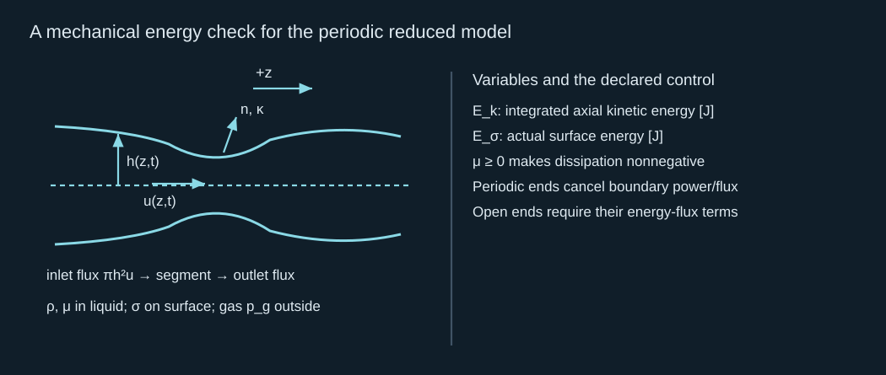
A mechanical energy check for the periodic reduced model
周期降阶模型的机械能核验
This check explains the instability energetically. Surface energy can decrease while kinetic energy grows, even with no added source work. Viscosity converts part of their sum to heat. For open ends, the displayed cancellation fails because liquid and pressure work carry energy across the control boundary. An inlet-driven jet may keep gaining energy; an isolated periodic control cannot. Use the correct control volume rather than treating all jet segments as closed.
这个核验从能量角度解释失稳：即使没有额外源做功，表面能也能减少、动能增长。黏性把两者之和的一部分转为热。开放端部中，液体与压力做功携能跨越控制边界，所示抵消不再成立。入口驱动射流可以持续获得能量，孤立周期对照则不能。应使用正确控制体，不可把所有射流段都视为封闭。
3 · Derive the wavelength condition from conserved liquid volume
3 · 从液体体积守恒推导波长条件
Perturb a cylinder by a sinusoidal radius disturbance over an integer number of wavelengths. Adjust its mean radius at second order so that the perturbation does not secretly add liquid. Expanding the surface area through second order then separates long and short waves. Long waves reduce area at fixed volume and can grow by releasing surface energy; short waves increase area and are restored. This is a varicose deformation of a liquid jet, not a periodically driven gas-bubble oscillation.
在整数个波长范围内，给圆柱半径施加正弦扰动。二阶调整平均半径，避免扰动偷偷增加液体。将表面积展开至二阶，可区分长波和短波。长波在体积固定时减少面积，可释放表面能而增长；短波增加面积而受到恢复作用。这是液体射流的曲张变形，不是周期驱动的气泡振荡。
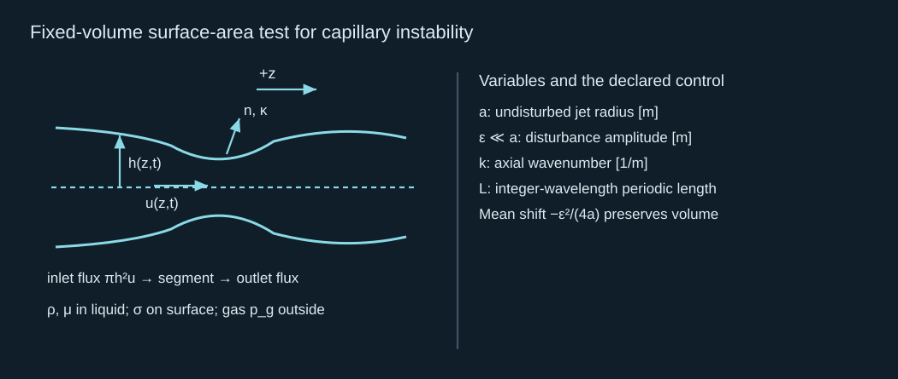
Fixed-volume surface-area test for capillary instability
毛细失稳的定体积表面积检验
The area test identifies whether a mode can lower surface energy, but it does not supply the time required to do so. To calculate growth rate, solve the perturbation motion. In the inviscid limit, consider a uniform cylinder moving at constant speed. A coordinate moving with that speed removes simple advection; disturbances grow in that coordinate while being carried toward the receiver in the laboratory frame.
面积检验识别某模式是否能降低表面能，但不给出所需时间。计算增长率还要求解扰动运动。无黏极限中，取恒速运动的均匀圆柱；随该速度移动的坐标消去简单平流。扰动在随动坐标中增长，同时在实验坐标中被带向接收体。
4 · Solve the exact inviscid cylinder and a viscous long-wave control
4 · 求解精确无黏圆柱及黏性长波对照
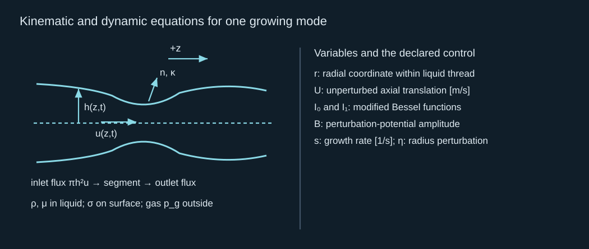
Kinematic and dynamic equations for one growing mode
一个增长模式的运动学与动力学方程
The regular radial solution of Laplace’s equation inside the cylinder is the modified Bessel function shown above. The kinematic condition equates surface growth to radial velocity. Linearized Bernoulli supplies the liquid pressure disturbance, while the linear curvature disturbance has opposite contributions from azimuthal radius change and axial bending. Eliminate the unknown potential amplitude between those two interface equations to obtain the dispersion relation.
圆柱内部 Laplace 方程的径向正则解是上式中的修正 Bessel 函数。运动学条件把表面增长与径向速度相等；线性化 Bernoulli 给出液体压力扰动，而线性曲率扰动中，周向半径变化与轴向弯曲贡献相反。在两个界面方程之间消去未知势幅，得到色散关系。
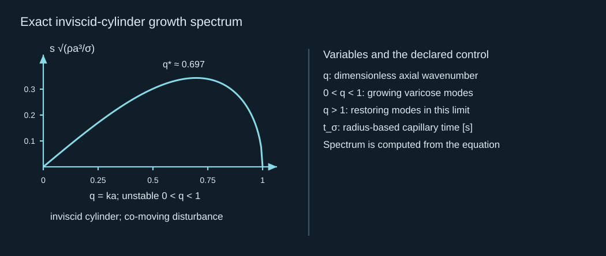
Exact inviscid-cylinder growth spectrum
精确无黏圆柱增长谱
Positive squared growth occurs for the same long-wave interval found by the area argument. Numerical maximization of this explicit function gives the fastest mode and a definite e-folding time. The mathematical control is an infinitely long cylinder in dynamically negligible surrounding gas. A finite emitted jet must also support the wavelength, and the initial disturbance amplitude must be known to predict when it becomes appreciable. The derivation and classic cylinder result can also be checked in MIT’s interfacial-phenomena notes.
平方增长率为正的区间与面积论证得到的长波区间相同。对该明确函数进行数值最大化，会给出最快模式和确定的 e 倍增长时间。数学对照是周围气体动力学可忽略的无限长圆柱。有限喷出射流还必须容纳波长，要预测扰动何时显著，也必须知道初始扰动幅度。推导及经典圆柱结果可在 MIT 界面现象讲义中核查。
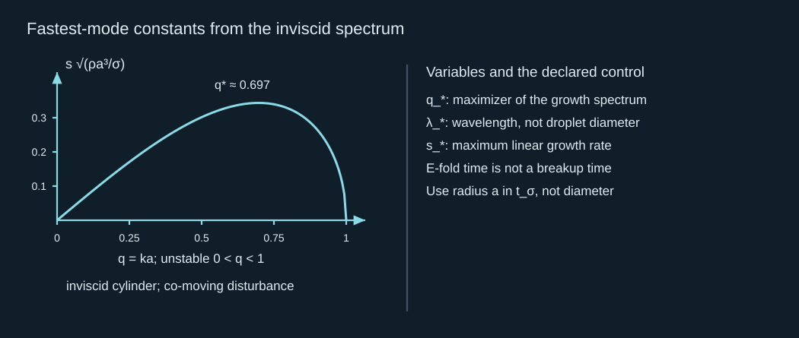
Fastest-mode constants from the inviscid spectrum
由无黏增长谱得到的最快模式常数
For a viscous correction, linearize the slender continuity and momentum equations about the same cylinder. The velocity disturbance and radius disturbance are coupled: flow divergence changes radius, and radius-dependent curvature changes pressure. Eliminating velocity gives a quadratic growth equation with an extensional viscous term. This is a controlled long-wave reduced result. It agrees with the exact inviscid spectrum at small dimensionless wavenumber, but it is not the exact viscous-cylinder spectrum at every wavelength.
黏性修正可在同一圆柱附近线性化细长连续性及动量方程。速度扰动与半径扰动耦合：流动散度改变半径，依赖半径的曲率改变压力。消去速度后得到包含拉伸黏性项的二次增长方程。这是受控长波降阶结果；在小无量纲波数下与精确无黏谱一致，但不是所有波长下的精确黏性圆柱谱。
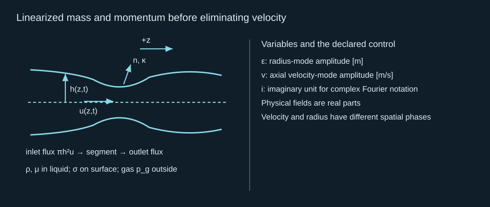
Linearized mass and momentum before eliminating velocity
消去速度前的线性化质量与动量
The first relation comes from expanding the cross-sectional area to first order. The second comes from the curvature pressure gradient and axial viscous stress. Multiplying them cancels the velocity amplitude and the imaginary factors produce a positive long-wave growth term. This derivation makes the instability mechanism concrete: liquid converges into bulges, while viscosity resists the required axial extension. It also provides an algebraic limit check independent of the exact Bessel-function calculation.
第一关系来自把截面积展开至一阶；第二关系来自曲率压力梯度和轴向黏性应力。将两式相乘后速度幅度消去，虚数因子产生正的长波增长项。这使失稳机制具体化：液体向鼓起部位汇聚，黏性阻碍所需轴向拉伸，并提供独立于精确 Bessel 函数计算的代数极限核验。
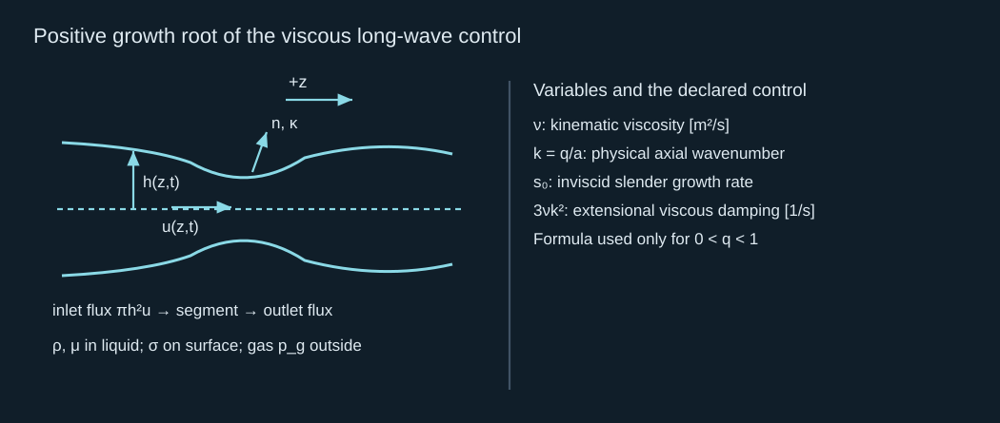
Positive growth root of the viscous long-wave control
黏性长波对照的正增长根
Increasing viscosity lowers the positive growth root at a fixed radius and wavenumber. This can delay necking, while also increasing formation losses and lowering the jet speed. A viscosity increase is therefore a trade-off, not an automatic transfer improvement. For a useful stability comparison, keep formation energy, flight distance, jet mass and initial noise explicit rather than comparing growth rates alone.
半径与波数固定时，黏性增大会降低正增长根。这可以延缓缩颈，同时也增加形成损失并降低射流速度。因此，增加黏性存在权衡，并不自动改善转印。有用的稳定性比较应明确形成能量、飞行距离、射流质量和初始噪声，而不是只比较增长率。
5 · Compare instability growth with finite flight and emitted length
5 · 将失稳增长与有限飞行和喷出长度比较
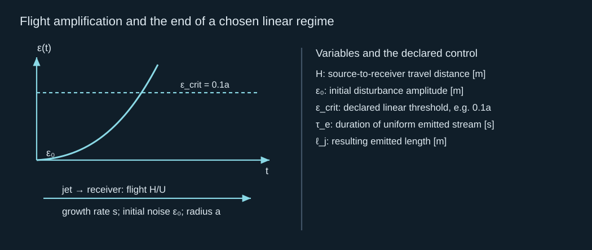
Flight amplification and the end of a chosen linear regime
飞行放大及选定线性范围的终点
Choose a small disturbance threshold to remain within linear theory. Time to reach one tenth of the radius is a meaningful linear diagnostic; time extrapolated until the disturbance equals the whole radius is not an exact pinch-off time. Actual breakup requires the nonlinear neck solution and suitable end conditions. When the jet is only a few wavelengths long, end retraction and the leading cap can dominate. Surrounding-gas drag and aerodynamic instability can matter in a different regime and must then be added.
选择小扰动阈值才能保持在线性理论内。达到半径十分之一的时间是有意义的线性诊断；外推到扰动等于整个半径的时间不是精确夹断时间。实际破碎需要非线性颈部解和合适端部条件。射流仅有几个波长时，端部回缩及前端帽可能主导。另一范围下，周围气体阻力与气动失稳可能重要，届时需要加入。
A periodic finite cylinder is a second soluble control that exposes the length condition quantitatively. It allows only integer wavelengths around its period. Evaluate the same exact inviscid spectrum at these discrete wavenumbers rather than assuming that the continuous fastest wavelength must occur. This periodic calculation is not a free-ended emitted jet; it isolates the finite spectrum while eliminating cap motion and end retraction.
有限周期圆柱是第二个可解对照，可定量展示长度条件。它只允许周期内整数波长。应在离散波数上评价同一精确无黏谱，而不是假定连续最快波长必然出现。周期计算不是自由端喷出射流，而是排除端帽运动及端部回缩，以隔离有限谱。
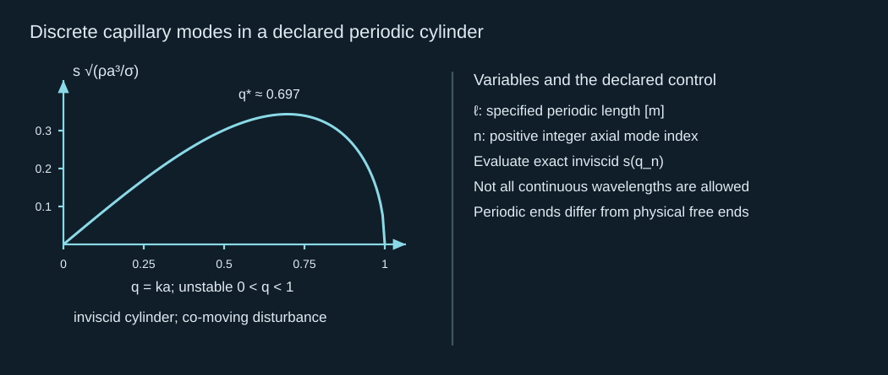
Discrete capillary modes in a declared periodic cylinder
声明周期圆柱中的离散毛细模式
For radius 5 μm and period 300 μm, modes one through nine grow; mode ten lies beyond the long-wave interval. Mode seven is fastest among the allowed integers, with growth rate 259,198 s⁻¹. Starting at one percent of radius, it reaches 3.65461 percent after 5 μs. The continuous fastest mode gives 3.67987 percent. Agreement is close in this benchmark, and the reason is visible: an allowed mode lies close to the continuous maximum. A shorter period can give a qualitatively different answer.
半径 5 μm、周期 300 μm 时，一至九阶增长，十阶超出长波区间。允许整数中七阶最快，增长率 259,198 s⁻¹。若始于半径百分之一，5 μs 后达到百分之 3.65461；连续最快模式给出百分之 3.67987。本对照中两者接近，原因明确：一个允许模式靠近连续最大值。更短周期可能得到性质不同的结果。
If the jet keeps stretching during flight, neither radius nor wavenumber is constant. Following a local material section, incompressible axial extension thins the radius and stretches the wavelength. A slowly varying local-cylinder approximation can integrate the instantaneous growth rate along that trajectory. The approximation requires spatial and temporal scale separation; rapid necking or strongly changing tip geometry should use the full slender equations instead. This avoids applying one initial capillary time to an entire evolving jet.
射流在飞行中继续拉伸时，半径和波数都不是恒定的。跟随局部材料截面，不可压缩轴向拉伸使半径变细并拉长波长。缓慢变化的局部圆柱近似可沿轨迹积分瞬时增长率，但需要空间与时间尺度分离；快速缩颈或尖端几何强烈变化时应使用完整细长方程。这避免用单一初始毛细时间描述整个演化射流。
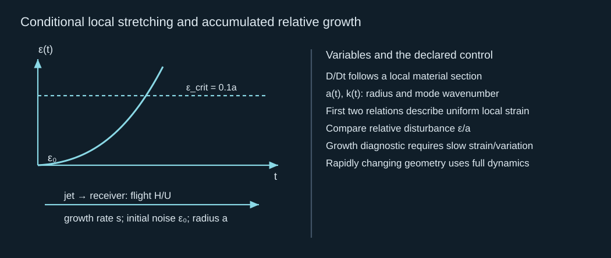
Conditional local stretching and accumulated relative growth
有条件的局部拉伸与累计相对增长
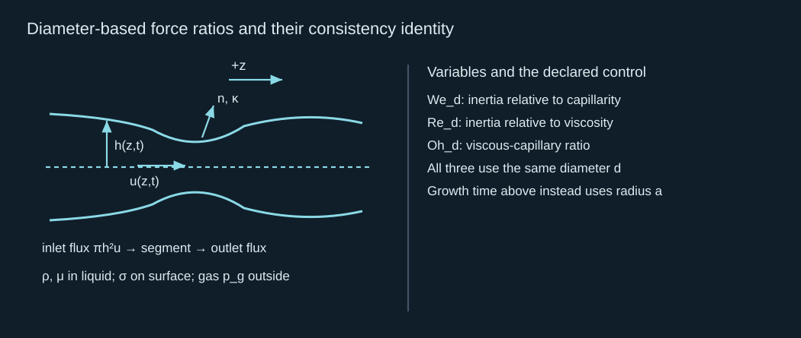
Diameter-based force ratios and their consistency identity
按直径定义的作用比及其一致性恒等式
Dimensionless groups organize the regime but do not replace the initial-value calculation. For a fixed volume flux, halving radius increases speed fourfold. The capillary rate rises because the radius is smaller, but the flight time falls more strongly. In that special comparison, the accumulated growth exponent decreases. For a pressure-limited formation process the flux need not stay fixed, so repeat the comparison using the actual solved source output.
无量纲数组织物理范围，但不能替代初值计算。体积流量固定时，半径减半使速度变成四倍。半径减小会使毛细增长率提高，但飞行时间下降更显著，因此在这个特定比较中，累计增长指数减小。限压形成过程中，流量未必固定，所以需要使用实际已解源输出重新比较。
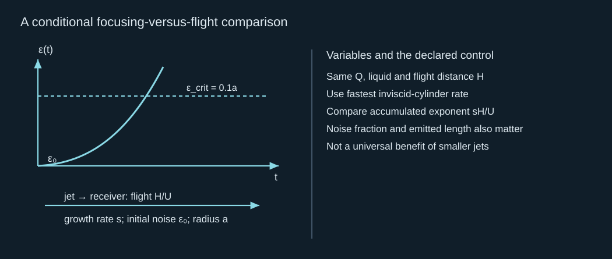
A conditional focusing-versus-flight comparison
有条件的聚焦与飞行比较
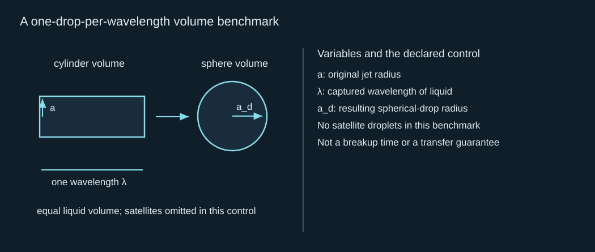
A one-drop-per-wavelength volume benchmark
每波长一个液滴的体积对照
The final relation estimates a droplet size by conserving one wavelength of liquid. Satellite droplets, variable wavelength, axial stretching and finite end caps change the actual distribution. This completes the transport part of the theoretical chain: a formed jet is propagated with mass and energy accounting, disturbance growth and a finite flight time. J04 then converts the arrival state into receiver force and a defined pressure observation.
最后的关系通过守恒一个波长内的液体估算液滴尺寸。卫星滴、波长变化、轴向拉伸及有限端帽会改变实际分布。这完成理论链的输运部分：已形成射流通过质量、能量核算，扰动增长及有限飞行时间传播。J04 再将到达状态转为接收体受力和明确定义的压力观察。
Comprehensive calculation · does a fine jet survive the flight?
综合计算 · 细射流能否在飞行中保持完整？
Consider an illustrative uniform jet: radius 5 μm, speed 20 m/s, emitted length 300 μm, receiver distance 100 μm. Use liquid density 1,000 kg/m³, viscosity 0.001 Pa s and surface tension 0.072 N/m. Start a fastest inviscid mode at amplitude one percent of the radius and set the linear threshold at ten percent. Treat end effects as a separate check.
考虑教学均匀射流：半径 5 μm、速度 20 m/s、喷出长度 300 μm、接收体距离 100 μm。取液体密度 1,000 kg/m³、黏度 0.001 Pa s、表面张力 0.072 N/m。最快无黏模式初始幅度为半径的百分之一，线性阈值为百分之十。端部效应另行检查。
1. Calculate jet mass, flight time and all three diameter-based groups.
1. 计算射流质量、飞行时间及三个按直径定义的无量纲数。
Reference 1 · finite arriving inventory / 参考 1 · 有限到达存量
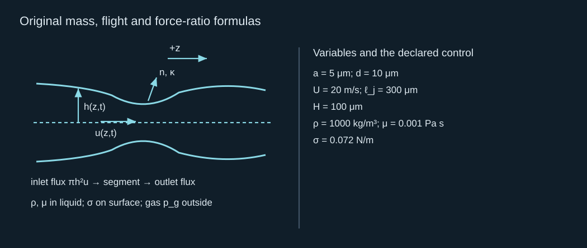
Original mass, flight and force-ratio formulas
质量、飞行及作用比的原始公式
The area is 7.85398×10⁻¹¹ m² and mass is 2.35619×10⁻¹¹ kg = 23.5619 ng. Flight time is 5.00 μs. The Weber number is 55.5556, Reynolds number 200 and Ohnesorge number 0.0372678. The consistency identity gives the same last value. These describe the stated arriving jet, not its unknown cavity-to-jet efficiency.
面积为 7.85398×10⁻¹¹ m²，质量为 2.35619×10⁻¹¹ kg = 23.5619 ng，飞行时间为 5.00 μs。韦伯数 55.5556、雷诺数 200、奥内佐格数 0.0372678，一致性恒等式得到相同末值。这些描述声明的到达射流，不确定未知的腔体到射流效率。
2. Calculate capillary time, fastest wavelength and growth rate. How many such wavelengths fit in the emitted length?
2. 计算毛细时间、最快波长与增长率。喷出长度内可以容纳多少个这样的波长？
Reference 2 · radius-based growth / 参考 2 · 按半径定义的增长
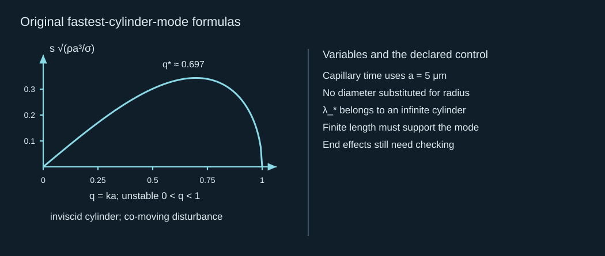
Original fastest-cylinder-mode formulas
最快圆柱模式的原始公式
Capillary time is 1.31762 μs, fastest wavelength 45.0718 μm, and growth rate 2.60576×10⁵ s⁻¹. About 6.655 such wavelengths fit. The finite length does not exclude this wavelength, but six to seven wavelengths do not prove that end effects are negligible.
毛细时间为 1.31762 μs，最快波长 45.0718 μm，增长率 2.60576×10⁵ s⁻¹，约容纳 6.655 个波长。有限长度没有排除该波长，但六至七个波长不能证明端部效应可忽略。
3. Calculate time to the ten-percent threshold and disturbance amplitude at arrival. Does this solve the exact breakup time?
3. 计算达到百分之十阈值的时间及到达时扰动幅度。这是否求解了精确破碎时间？
Reference 3 · a defined linear diagnostic / 参考 3 · 明确定义的线性诊断
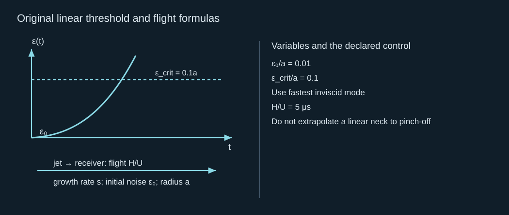
Original linear threshold and flight formulas
线性阈值与飞行的原始公式
The threshold time is 8.83653 μs and the arrival amplitude is 0.0367987 of radius, below the chosen 0.1 threshold. This mode remains in the declared linear range during flight. It does not establish that the real finite jet cannot break by another mode or end retraction. Extrapolating to unit relative amplitude gives 17.6731 μs, but that is explicitly a linear extrapolation, not an exact pinch-off result.
阈值时间为 8.83653 μs，到达幅度为半径的 0.0367987，低于选定 0.1 阈值。因此该模式在飞行中保持在声明线性范围内，但不能证明真实有限射流不会因另一模式或端部回缩而破碎。外推到相对幅度为一得到 17.6731 μs，这明确属于线性外推，不是精确夹断结果。
4. At dimensionless wavenumber 0.2, calculate the positive slender-model growth rate for viscosities 0, 0.001 and 0.010 Pa s.
4. 无量纲波数 0.2 时，分别计算黏度为 0、0.001 和 0.010 Pa s 的细长模型正增长率。
Reference 4 · viscous long-wave comparison / 参考 4 · 黏性长波比较
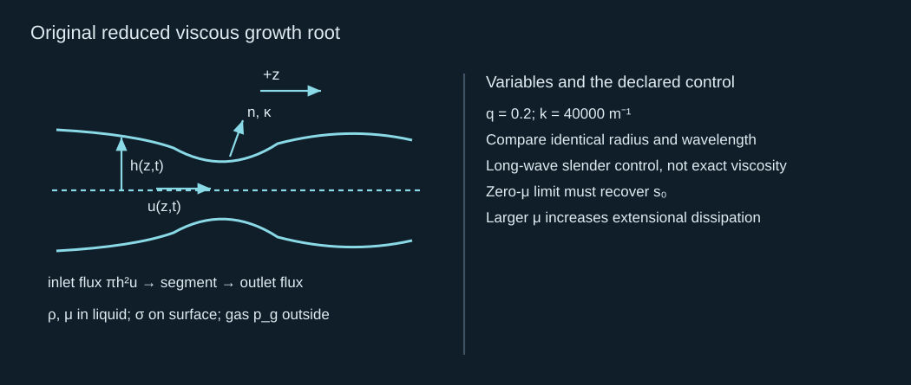
Original reduced viscous growth root
降阶黏性增长根的原始公式
The three rates are approximately 105,163 s⁻¹, 102,790 s⁻¹ and 83,866.6 s⁻¹ respectively. Viscosity slows this growing mode. The reduction must not be advertised as the exact full viscous-cylinder prediction at arbitrary wavelength. Increasing viscosity also changes the formation and flight speeds unless they are held as separate control inputs.
三个增长率分别约为 105,163 s⁻¹、102,790 s⁻¹ 和 83,866.6 s⁻¹。黏性减慢该增长模式，不能把降阶结果称为任意波长下精确完整黏性圆柱预测。除非形成及飞行速度另作固定对照输入，否则黏性增加也会改变这些速度。
5. Estimate the one-drop-per-fastest-wavelength diameter and state what must be added for a real breakup prediction.
5. 估算每个最快波长形成一个液滴时的直径，并说明真实破碎预测还需要什么。
Reference 5 · volume estimate versus nonlinear breakup / 参考 5 · 体积估算与非线性破碎
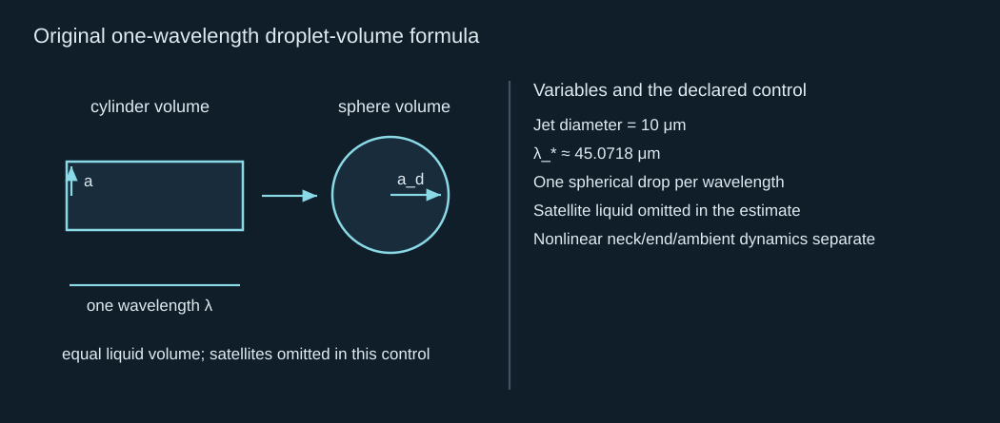
Original one-wavelength droplet-volume formula
一个波长液滴体积的原始公式
The nominal droplet diameter is 18.9089 μm. A real distribution and breakup time require nonlinear initial-value evolution with the actual finite profile, noise spectrum, inlet/end conditions, and ambient forces when relevant. The verified linear calculation predicts growth and an arrival threshold; it does not claim an observed intact-transfer rate.
名义液滴直径为 18.9089 μm。真实分布与破碎时间需要实际有限轮廓、噪声谱、入口／端部条件，以及必要时环境作用下的非线性初值演化。已核验线性计算预测增长及到达阈值，不声称实测完整转印率。
Brief mastery response
简短掌握回答
Explain why a large Weber number or one capillary time does not determine breakup. Connect initial noise, growth rate, emitted length and flight time, then state which arrival variables J04 needs.
解释为什么较大韦伯数或一个毛细时间不能确定破碎。连接初始噪声、增长率、喷出长度与飞行时间，并指出 J04 需要哪些到达变量。
Reference-assisted calculations are welcome. Send one short explanation in your own words; preparation of this page does not mark the chapter solved. Earlier accepted records retain their credit.
允许参照答案完成计算。请用自己的话提交一段简短解释；备妥本页不代表本章已完成。此前已接受记录的学分保留。